Riverside Park 1893-1901

View of Meander Creek in Riverside Park.
{kind=link}
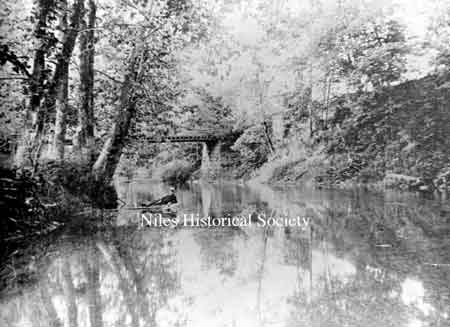
View of Meander Creek

A view of the streetcar lines and admission gates at Riverside Amusement Park on the southwest corner of Route 46 and Salt Springs Road when streetcars were popular in the late 1880's and early 1900's.

Waterfall along Meander Creek in Riverside Park.

Boats on Meander Creek in Riverside Park.

Shoreline along Meander Creek in Riverside Park.
{kind=link}
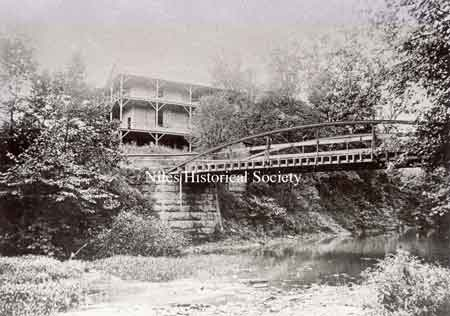
The manager of the amusement park advertised that the facilities included a large dance pavilion, which had a rambling veranda and a walking bridge across Meander Creek.
{kind=link}
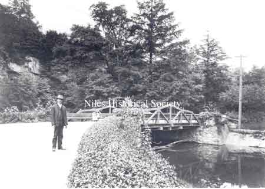
Walking bridge across Meander Creek.
{kind=link}
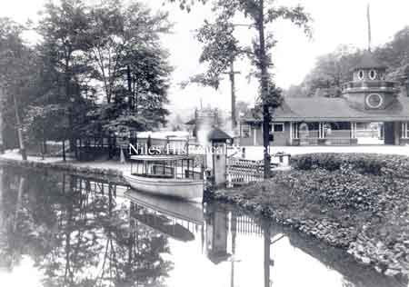
There was also a small steamer, “the Mayflower”, which would carry 75 passengers as it slowly went up and down Meander Creek.
{kind=link}
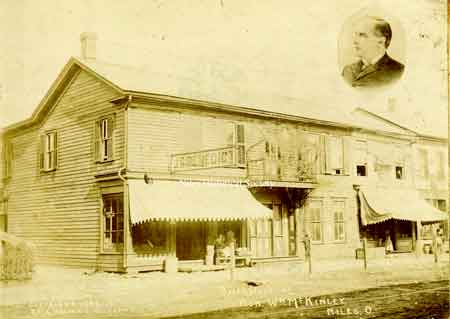
William McKinley birth home.

The second half of the house was moved to Franklin alley and used as a shop where the Harris rotary offset presses were made.
{kind=link}
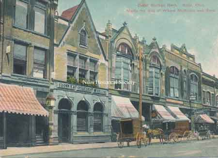
View of City National Bank.

William McKinley birth home.

During the late 1890's, after McKinley had been elected President , an effort was made to preserve his birthplace. We do not know who undertook the responsibility or expense, but the house was cut in two. The part the president had been born in was moved to Riverside Park

Photo of the McKinley birthplace in its location at Riverside Park (corner of Salt Springs and Rte. 46 in Mineral Ridge)
{kind=link}
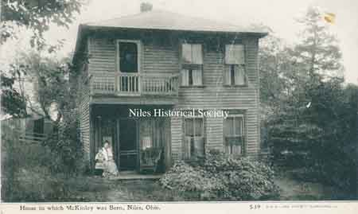
With the demise of the amusement park, the McKinley house was occupied by tenants on the Riverside Park site until 1908.
{kind=link}
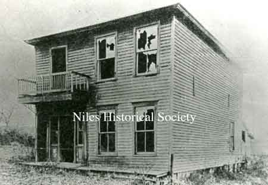
One-half of the McKinley birth home in Riverside Park.

Two halves of McKinley birth home together again, 1910.
{kind=link}
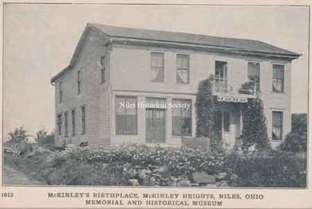
The museum was located on the Tibbetts property where the McKinley Heights Plaza is today at the intersection of Routes 422 and 169( Route 169 is still referred to as Tibbetts-Wick Road).

The museum was located on the Tibbetts property where the McKinley Heights Plaza is today at the intersection of Routes 422 and 169( Route 169 is still referred to as Tibbetts-Wick Road).

Interior views of a bedroom and a law office situated in the McKinley Museum on the Tibbetts property in McKinley Heights.
{kind=link}
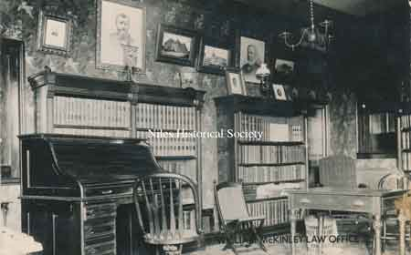
Interior views of a bedroom and a law office situated in the McKinley Museum on the Tibbetts property in McKinley Heights.

McKinley Heights Museum, 1927.
{kind=link}
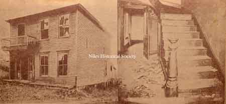
After falling into disrepair, vandals burned the structure and it was destroyed in the late 1930s.

In 1809, James McKinley, the president's grandfather, migrated from PA. to this house in New Lisbon, Ohio.